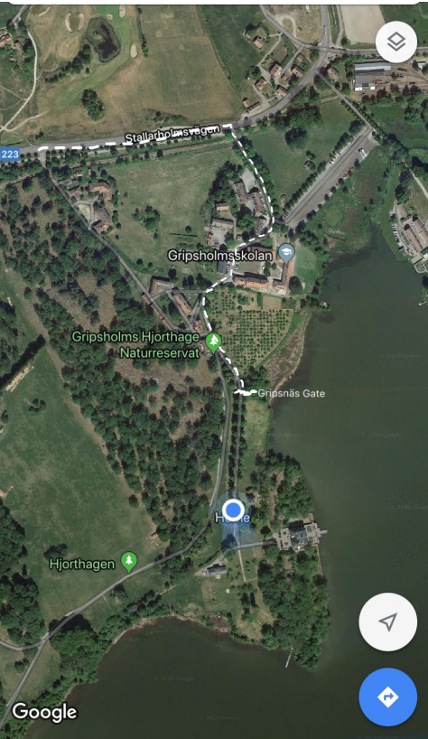

Location & Directions
The celebration is at Gripsnäs, just outside Mariefred, about an hour south-west of Stockholm. If you've never driven out here before, don't worry: it's a straight, scenic run, and the map below shows the final approach turn by turn.
Tip: Gripsnäs is a protected area and may not come up by name on Google Maps. If so, search the postcode 647 31 instead, that brings you right to it.
- 1Take the highway E4/E20 South.
- 2At Södertälje, turn towards Gothenburg.
- 3Leave the highway at the exit to Mariefred, road number 223.
- 4Follow road 223 and the map below, past Gripsholmsskolan, through the nature reserve and Gripsnäs Gate, right down to the house. Parking is on site (see the parking page).
Take the commuter train or SJ service from Stockholm toward Läggesta (about 35 minutes). From Läggesta it's a short taxi ride, or hop on the vintage steam railway into Mariefred. Let us know if you'd like help arranging a lift, plenty of the family will be driving and happy to share.
Once you're on road 223
This is the last stretch in. Follow the marked route from Stallarholmsvägen, past Gripsholmsskolan, through the Gripsholms Hjorthage nature reserve and the Gripsnäs gate, straight down to the house by the water.

- ACome off road 223 onto Stallarholmsvägen and follow it east.
- BTurn in past Gripsholmsskolan and continue south on the small road.
- CCarry on through the nature reserve and the Gripsnäs gate.
- DThe road ends at the house by the lake, you've arrived. 🎉
From central Stockholm in normal traffic.
Search this if the name won't show on Maps.
The Mariefred exit, then follow it all the way in.